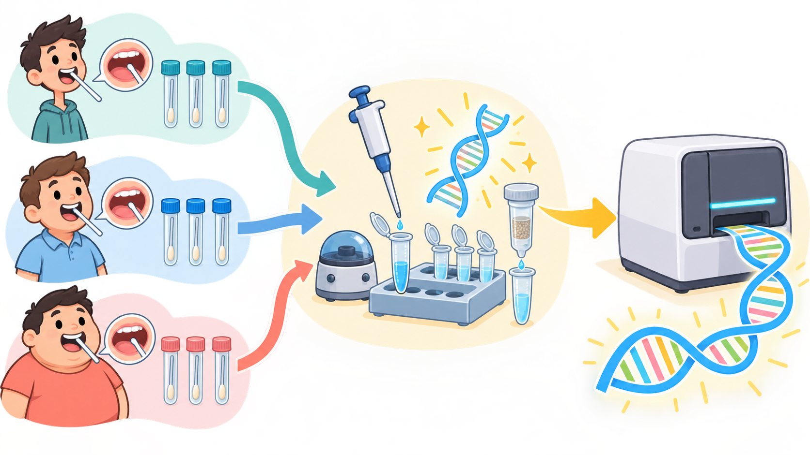

Evidence-led case study
Microbiome report walkthrough via KodaSeq-i
Use real example data to move from biological question to evidence and next steps.
Sequencing workflow
From biological samples to interpretable microbiome results

Illustrative case study
A PhD student compares oral swabs from three TB-status groups

The hypothesis
Will the microbiomes follow a Control → Latent → Active gradient?
Control and Active should be most different, with Latent between them.
Interpretation framework
Move from a biological question to a safe conclusion
Question
What biological difference are we testing?
Visual pattern
What do the samples appear to show?
Matching test
Does the correct statistic support that pattern?
Safe conclusion
What can we report, and what should happen next?
Before the results
Check what became data
One rule
A visible pattern is not yet a supported conclusion
“The groups look different.”
Describe what is visible and inspect the individual samples.
“The matching test supports a difference.”
Check the statistic, effect size, dispersion, sample size and correction.
Composition
Does one taxon support the expected gradient?
Example within the Control cohort · Haemophilus relative abundance
Descriptive only. Large variation within the same cohort weakens a simple Control → Latent → Active story.
08Within-sample diversity
Does Shannon diversity differ among cohorts?
Primary hypothesis test
Are Control and Active the farthest apart?
Farthest apart
Closest pair
Average weighted UniFrac distance = 0.147
Sensitivity check
Does one influential-looking sample change the story?
All nine samples
Control drops to n = 2
Report the released dataset
Post-hoc removal does not confirm the effect. It shows the result is sensitive to one sample.
11Predicted activity
Do predicted functions differ?
FDR-supported functional differences
Visible predictions remain hypotheses: 16S-based functions are inferred from reference genomes, not directly measured activity.
Decision
Is the evidence ready to replicate?
The expected gradient is unsupported, the cohort is small, and the strongest signal is sensitive to one sample.
13